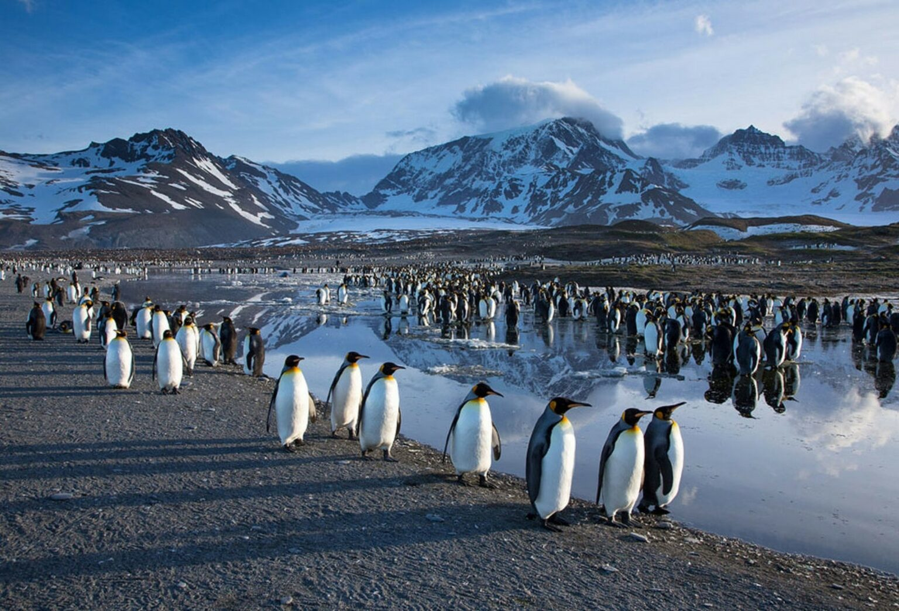
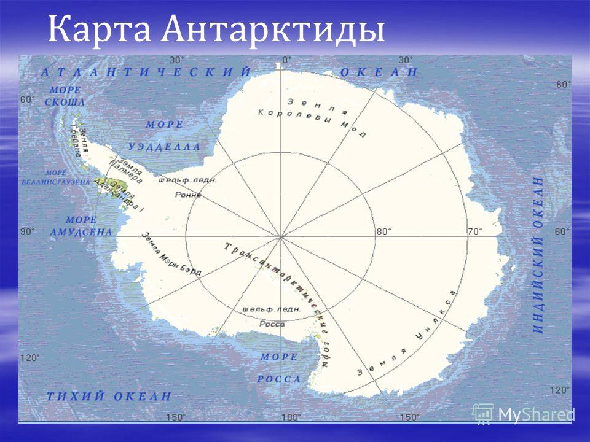

|
Меню
|
Птицы Антарктиды  Описание Антарктиды Антарктида — континент, расположенный на самом юге Земли. Центр Антарктиды примерно совпадает с Южным географическим полюсом. Омывается Атлантическим, Индийским и Тихим океанами. С 2000 года воды, омывающие Антарктиду к югу от 60° ю. ш., по решению Международной гидрографической организации называются Южным океаном.Площадь: 13 660 000 км² Высота над уровнем моря: 4 897 м Население: постоянного населения нет, сотрудники полярных станций: летом около 4000 человек, зимой около 1000 человек. чел Плотность: менее 0,1 чел./км² Часовые пояса: UTC-12.. UTC+12, UTC+0 на Южном полюсе; см. Время в Антарктиде Территория: 14 107 000 км² |